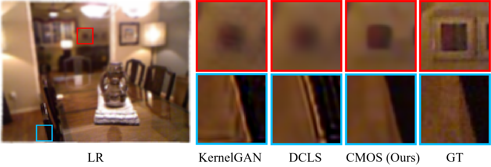

|
Xuhai Chen I'm a Master's student at Zhejiang University in China, advised by Prof. Yong Liu, and expect to graduate in 2025. In 2024, I had the pleasure of interning at the State Key Laboratory of CAD&CG at Zhejiang University, where I worked with Prof. Xiaowei Zhou and Prof. Sida Peng. It was a valuable and enriching experience, during which I learned a great deal. My current focus is on motion generation, and I'm also actively exploring image super-resolution and anomaly detection. Life is meant to be experienced. |

|
Awards |
|
|
Papers |
|  |
Better "CMOS" Produces Clearer Images: Learning Space-Variant Blur Estimation for Blind Image Super-Resolution
Xuhai Chen, Jiangning Zhang, Chao Xu, Yabiao Wang, Chengjie Wang, Yong Liu CVPR, 2023 paper / github / bibtex Estimating space-variant blur degradation with the help of semantic information. |

|
A Zero-/Few-Shot Anomaly Classification and Segmentation Method for CVPR 2023 VAND Workshop Challenge Tracks 1&2: 1st Place on Zero-shot AD and 4th Place on Few-shot AD
Xuhai Chen, Yue Han, Jiangning Zhang arXiv, 2023 paper / github / bibtex Technical report for the VAND challenge at the 2023 CVPR workshop. |

|
CLIP-AD: A Language-Guided Staged Dual-Path Model for Zero-shot Anomaly Detection
Xuhai Chen, Jiangning Zhang, Guanzhong Tian, Haoyang He, Wuhao Zhang, Yabiao Wang, Chengjie Wang, Yong Liu arXiv, 2023 paper / github / bibtex Adapt the CLIP model for anomaly segmentation by merely fine-tuning a linear layer, and explain the text prompts design from a distributional perspective. |
|
Exploring Plain ViT Reconstruction for Multi-class Unsupervised Anomaly Detection
Jiangning Zhang, Xuhai Chen, Yabiao Wang, Chengjie Wang, Yong Liu, Xiangtai Li, Ming-Hsuan Yang, Dacheng Tao arXiv, 2023 paper / github / bibtex Construct a reverse distillation architecture for multi-class anomaly detection using plain ViT. |